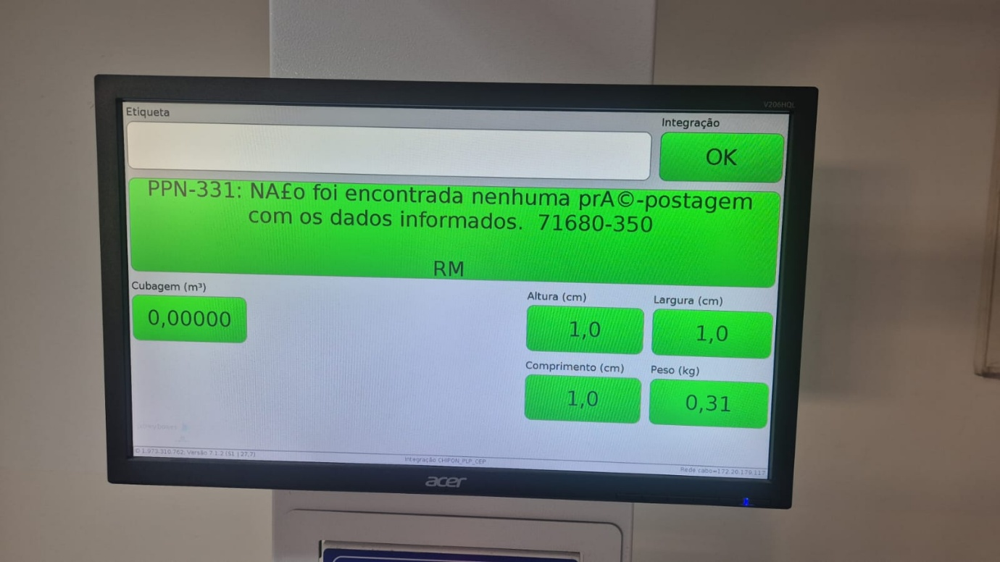
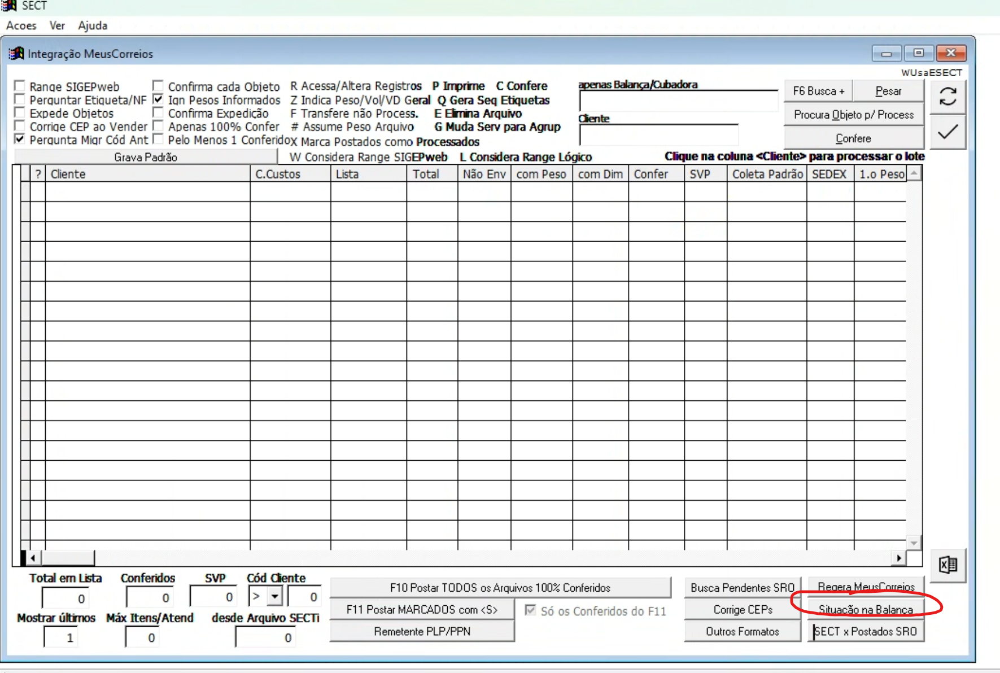
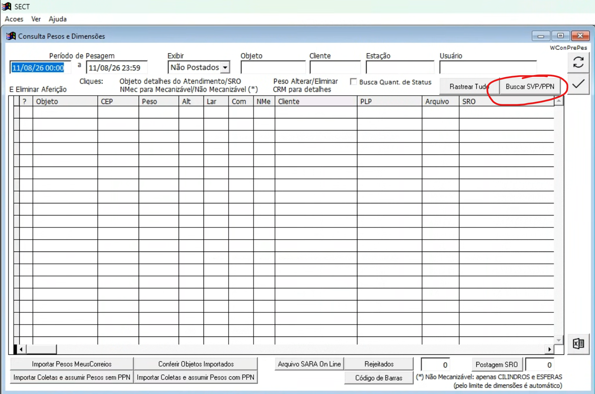
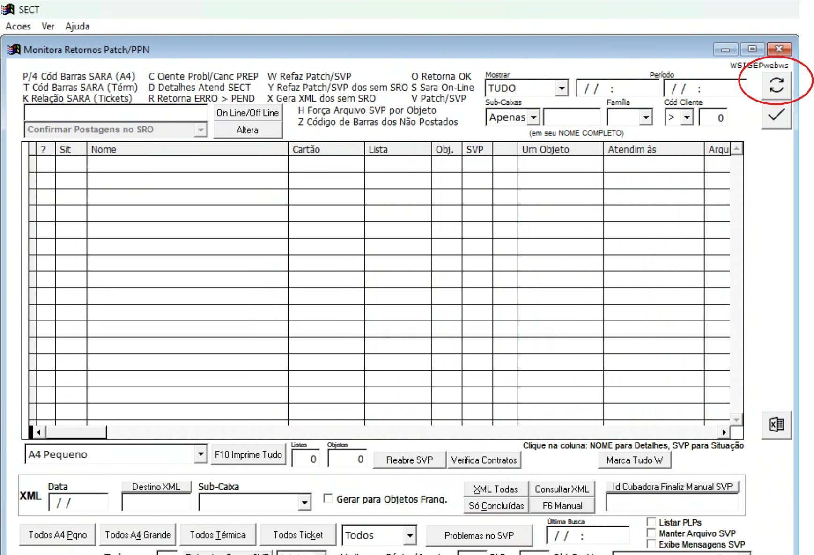
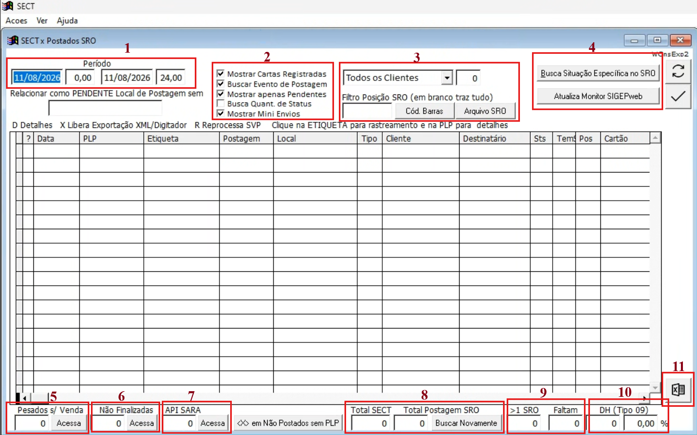
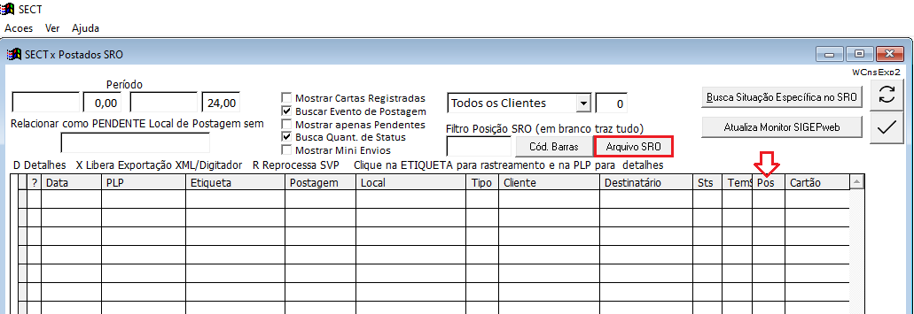
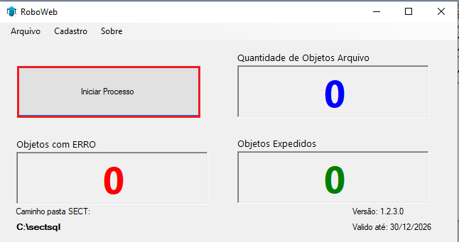

Checklist Venda Balança Cubadora SECT
Este passo a passo é voltado para a segurança da postagem. O processo é mais lento porque inclui as telas de conferência disponíveis em cada etapa da venda, permitindo identificar pendências antes de concluir a expedição.
Checklist operacional
Marque cada item conforme concluir a etapa.
Procedimento detalhado
1. Pesagem dos objetos
- Realize normalmente a pesagem dos objetos na balança.
- Se o WS informar “Não Localizado”, significa que não foi encontrada uma pré-postagem com os dados informados.
- Nesse caso, puxe o arquivo do MeusCorreios. Se o objeto for de terceiros, solicite ao cliente o ajuste da pré-postagem.

2. Venda no CTRL+S do SECT
- Faça a venda no CTRL+S.
- Acesse a tela Situação da Balança e confira se ficaram objetos pendentes para venda.

Se algum objeto aparecer nessa tela com o campo PLP vazio, a PPN do arquivo não foi importada. Clique em Buscar SVP/PPN para criar o arquivo necessário à venda. É nessa etapa que podem ser recuperadas as PPNs de objetos que apresentaram erro durante a pesagem, como cartão suspenso.

3. Conferência no Monitor SIGEPweb
Após a venda no CTRL+S, o SECT envia os dados ao Monitor SIGEPweb, responsável pela atualização da venda no Correios Atende.
- O monitor atualiza automaticamente a cada 5 minutos. Para forçar uma atualização, pressione F5 ou clique no ícone de atualizar.
- O comportamento normal é os objetos desaparecerem do monitor conforme passam a constar como postados no SRO.
- Se um objeto não desaparecer, pode ser que o Correios Atende ainda não tenha atualizado a informação.
- Se o CA estiver com problema, utilize a API SARA dentro de SECT x Postados SRO para confirmar se existe realmente algum objeto sem postagem.
- Para reprocessar um objeto que ainda não consta como postado no CA, informe a letra V. O monitor enviará novamente os dados daquela postagem.

4. Conferência no SECT x Postados SRO
Acesse Expedição → SECT x Postados SRO.

Mapa da tela SECT x Postados SRO

| Nº | Função | Como usar na conferência |
|---|---|---|
| 1 | Período de busca | Define o período da consulta e permite filtrar também pelo horário ao longo do dia. |
| 2 | Filtros da consulta | Permite filtrar Carta Registrada, buscar evento de postagem, mostrar apenas pendentes ou todos, buscar quantidade de status no SRO e incluir ou não Mini Envios. |
| 3 | Cliente / Posição SRO / Arquivo SRO | Filtra por cliente e posição no SRO. O botão Arquivo SRO gera o arquivo utilizado pelo robô de expedição quando Busca Quantidade de Status está ativo. |
| 4 | Busca de situação específica | Permite consultar uma situação específica no SRO, por exemplo objetos encaminhados que ainda não aparecem como postados. A opção Atualiza Monitor SIGEPweb envia ao monitor as informações atualizadas obtidas no cruzamento SECT x SRO. |
| 5 | Pesados s/ Venda | Mostra objetos que passaram pela balança, mas não tiveram o arquivo criado para venda no CTRL+S. Trate-os pela tela Situação dos Objetos. |
| 6 | Não Finalizadas | Mostra objetos cujo arquivo foi criado para o CTRL+S, mas que ainda não foram vendidos. Acesse o CTRL+S e finalize a venda. |
| 7 | API SARA | Útil quando o CA aceita as postagens, mas o SRO ainda não foi atualizado. Permite identificar quais objetos realmente continuam sem postagem, desconsiderando os que apenas aguardam a atualização do SRO. |
| 8 | Total SECT / Total Postagem SRO | Total SECT mostra quantos objetos foram vendidos; Total Postagem SRO mostra quantos já possuem o evento de postagem no SRO. |
| 9 | >1 SRO / Faltam | Mostra quantos objetos possuem mais de um status no SRO e quantos ainda precisam receber mais de um status. Pode ser usado para verificar objetos que ainda não foram expedidos. |
| 10 | Contagem de DH | Exibe a contagem relacionada ao horário de DH. O horário pode ser configurado em Cadastro AGF → Franquia e Parâmetros. |
| 11 | Exportação para Excel | Gera uma planilha com os objetos exibidos na tela. |
5. Gerar o arquivo e realizar a expedição no SROweb
- Após a postagem no Correios Atende, aguarde o retorno da informação POSTADO. O arquivo de expedição somente é gerado depois desse retorno.
- Antes de gerar o arquivo, deixe os rótulos abertos no SROweb.
- Acesse Expedição → SECT x Expedidos SRO ou utilize ALT+X.

- Confirme se todos os objetos possuem numeração preenchida na coluna Pos.
- Clique em Arquivo SRO.

- Com o robô de expedição instalado e configurado, abra o programa e clique em Iniciar Processo.
- O robô direcionará o processo para o SROweb e iniciará a leitura dos objetos.

Conclusão da conferência
Antes de encerrar o procedimento, confirme que não existem pendências de venda na balança, que as postagens foram atualizadas no Correios Atende/SRO e que o arquivo de expedição foi processado pelo robô.